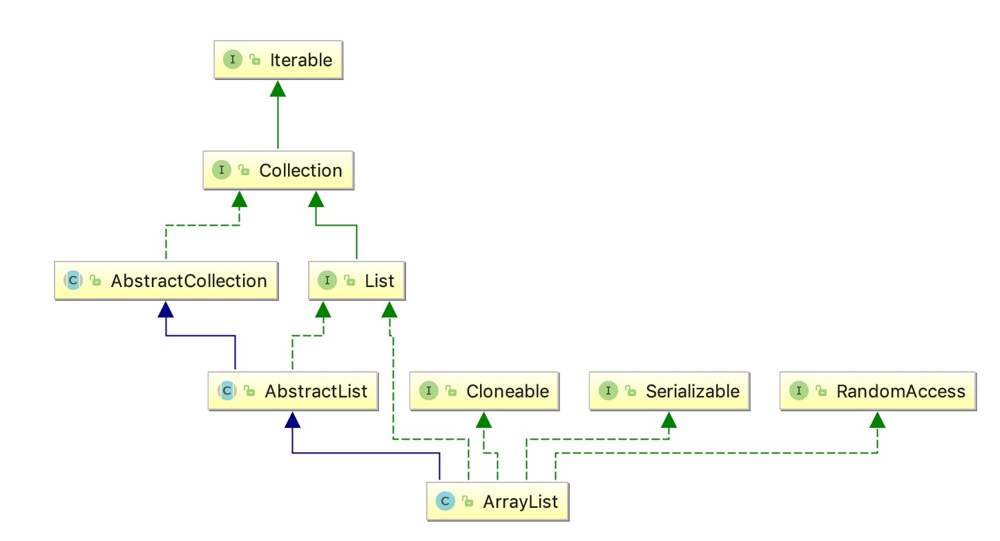

一、类关系图

标记接口
看类实现RandomAccess接口，则表明该类支持快速随机访问
RandomAccess是一个标记接口，表明实现这个这个接口的 List 集合是支持快速随机访问的
随机访问
在计算机科学中，随机访问（RandomAccess）是从大量的可寻址元素的数据中访问任何元素大致和访问其他元素一样简洁有效，不管多少元素在这个集合中。与随机访问相反的是顺序访问（SequenceAccess）
二、源码分析
初始化
|
|
1.ArrayList是基于数组（Object[] elementData）实现的
2.size是数组元素个数，capacity是数组容量
添加元素
|
|
1.添加第一个元素的时候会通过calculateCapacity()方法返回默认容量DEFAULT_CAPACITY值为10
2.进入grow()方法，通过int newCapacity = oldCapacity + (oldCapacity >> 1);把旧容量扩大1.5倍
3.通过Arrays.copyOf(elementData, newCapacity);把原数组复制给新数组，因为这个操作代价高所以建议初始化时候就给对象大概容量大小，减少扩容次数
获取元素
|
|
1.看源码很简单，获取指定下标数组元素
移除元素
|
|
1.调用System.arraycopy(elementData, index+1, elementData, index,numMoved);
将index+1后面的元素都复制到index 位置上，该操作的时间复杂度为 O(n)，通过 ArrayList删除元素的代价是很高的。
举个例子：
数组size=10,移除第三个（index=2）元素，需要移动numMoved=7个元素
示意图：
|
|
获取数量
|
|
获取元素下标
|
|
1.因为元素允许为null，所以需要判断if (o == null)
fail-fast机制
modCount
modCount是这个list被结构性修改（添加、删除等）的次数。
expectedModCount
认为该列表应该有的modCount的值，如果违背了这个期望，迭代器会检测到这个并发修改。
用法
在线程不安全的集合中，使用迭代器或序列号等的过程中，发现集合被修改，会抛出ConcurrentModificationExceptions错误，这就是fail-fast机制。
对集合进行结构性修改时，modCount都会增加，在初始化迭代器时，modCount的值会赋给expectedModCount，在迭代的过程中，只要modCount改变了，int expectedModCount = modCount等式就不成立了，迭代器检测到这一点，就会抛出错误：currentModificationExceptions。